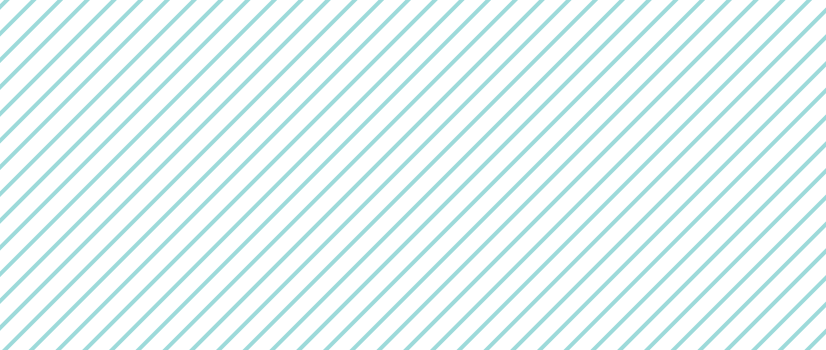
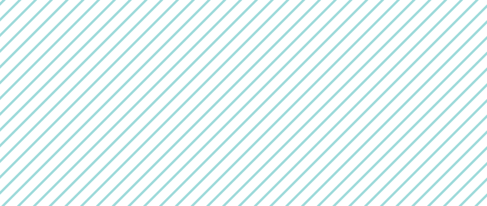
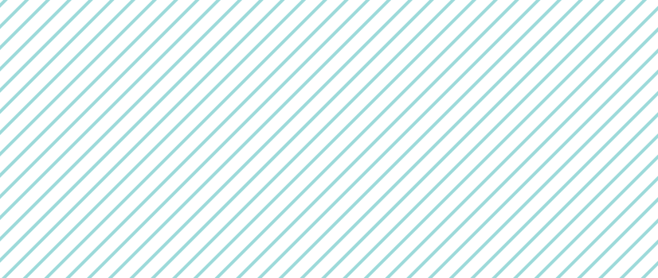
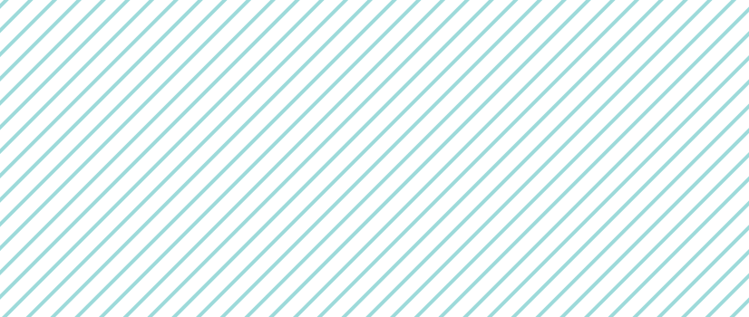

September 01, 2022
Die KPT, die zu den zehn größten Krankenkassen in der Schweiz zählt, verwendet die innovative Anwendung EverAsk um die Patientenkompetenz ihrer Versicherten zu fördern.
Der vom Schweizer Unternehmen Meeting Kitchen entwickelte digitale Helfer EverAsk ermöglicht es Anwendern, einen Spickzettel für ein bevorstehendes Arztgespräch zu erstellen. Somit investiert die KPT in die Patientenkompetenz und in die Behandlungsqualität, was letztlich auch relevant für die Kostendämpfung im Gesundheitswesen ist.
Während Ärzte und Ärztinnen täglich mit Menschen über deren Gesundheit sprechen, bedeuten solche Gespräche für Patientinnen und Patienten häufig eine Ausnahmesituation. Denn wenn es um die eigene Gesundheit geht, sind Menschen oft verunsichert und emotional belastet. Deshalb werden im Arztgespräch wichtige Anliegen und offene Fragen häufig vergessen. Als Folge davon verlassen Patienten und Patientinnen die Praxis oder das Spital oft mit einem unguten Gefühl.
Mit EverAsk steht Patientinnen und Patienten nun eine digitale Anwendung zur Verfügung, mit der diese sich ganz einfach und trotzdem gut auf ihr nächstes Arztgespräch vorbereiten. Der Assistent kann sowohl für Gespräche in Arztpraxen wie im Spital genutzt werden.

Vor einem Termin nehmen Anwender sich etwas Zeit und tragen in Ruhe ihre Ziele und Fragen in die Anwendung ein. Anschliessend erstellt EverAsk einen persönlichen Spickzettel, den Patienten und Patientinnen digital oder als Ausdruck zum Arztgespräch mitnehmen.
Die Idee zu EverAsk entstand auf Patienteninitiative hin. Meeting Kitchen hat EverAsk entwickelt und dabei die Wünsche der User mit Know-how aus dem Bereich Kommunikations- und Verhandlungsmanagement verknüpft. EverAsk wurde unter anderem in Zusammenarbeit mit dem Universitätsspital Basel im klinischen Umfeld getestet und weiterentwickelt.
EverAsk unterstützt Patienten und Patientinnen in Arztgesprächen offene Fragen zu klären und Unsicherheiten anzusprechen.